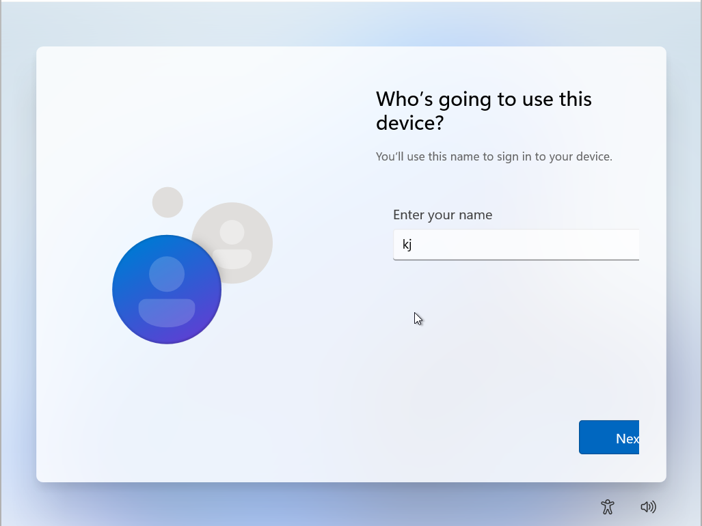
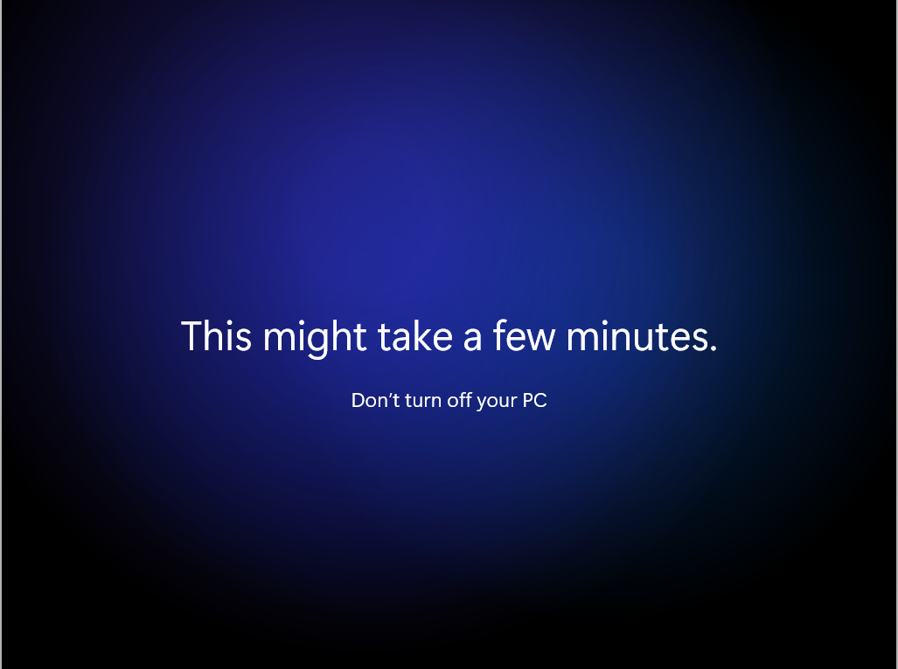
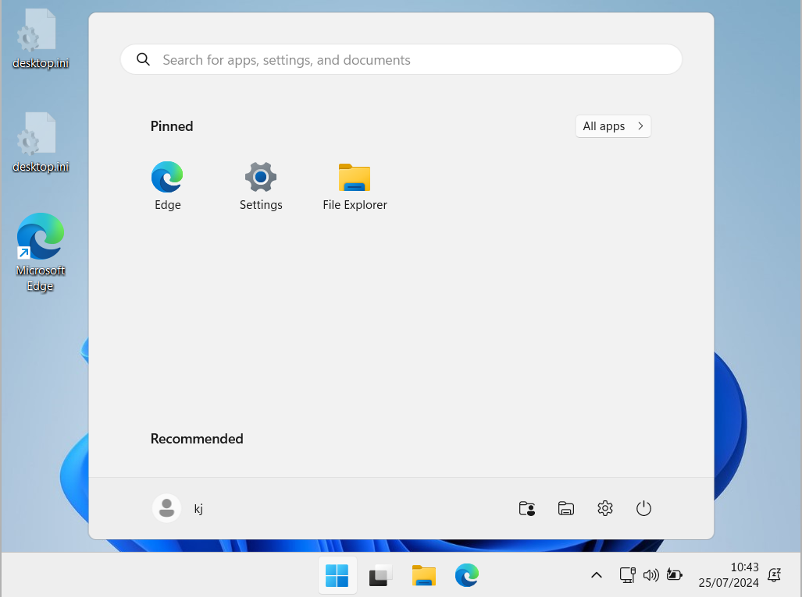

Pour créer le compte local, il suffit de mettre un nom de compte, puis un mot de passe.
3 questions de sécurité vous seront ensuite posées, elles servent à déverrouiller votre session Windows si jamais vous oubliez votre mot de passe.
📌 Il est donc fortement conseillé de les noter quelque part.
📌 L'ordinateur peut effectuer des mises à jour si de nouvelles sont disponibles et va redémarrer à plusieurs reprises.
Une fois les mises à jour effectuées, l'ordinateur peut vous demander votre code et terminera l'installation comme ci-dessous.
L'écran d'accueil de Windows s'affichera lorsque KJOS sera installé sur votre ordinateur.
📌 Si vous avez toujours votre clé bootable de branchée, vous pouvez la retirer.
📌 Si vous êtes sur une VM, vous pouvez retirer l'ISO des disques connectés de la même façon que lorsque vous l'avez ajouté.
À ce stade, KJOS est utilisable et vous pouvez commencer à l'utiliser.
En revanche, il reste quelques étapes pour terminer complètement l'installation de votre environnement Windows.